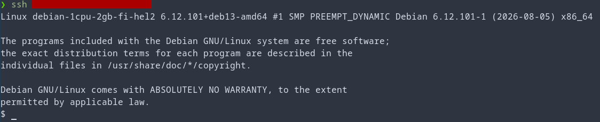
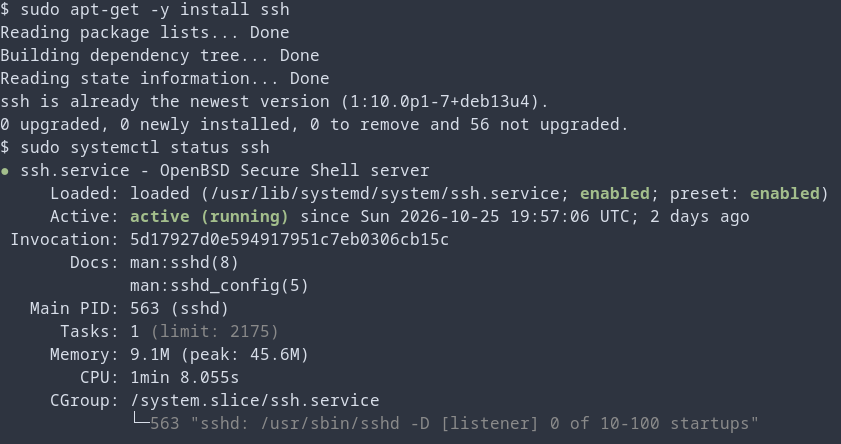
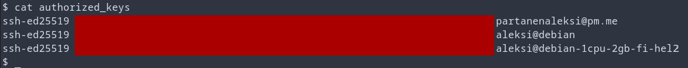
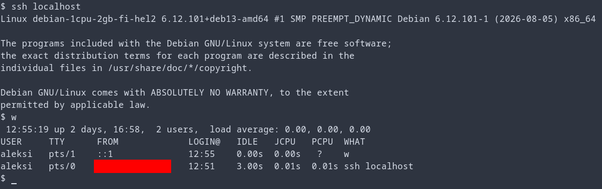
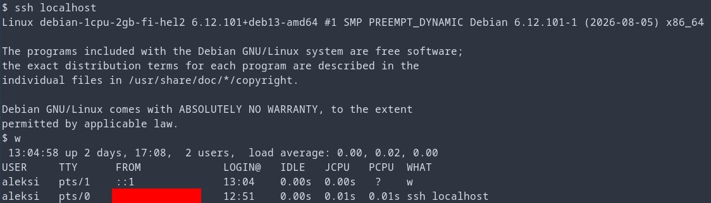
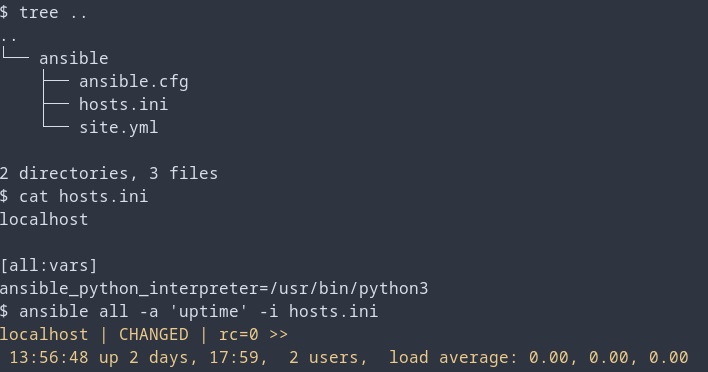
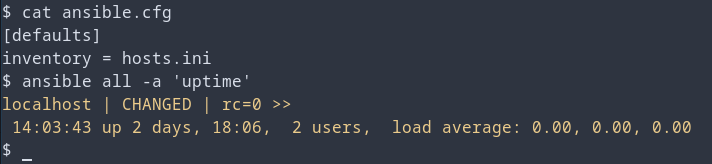
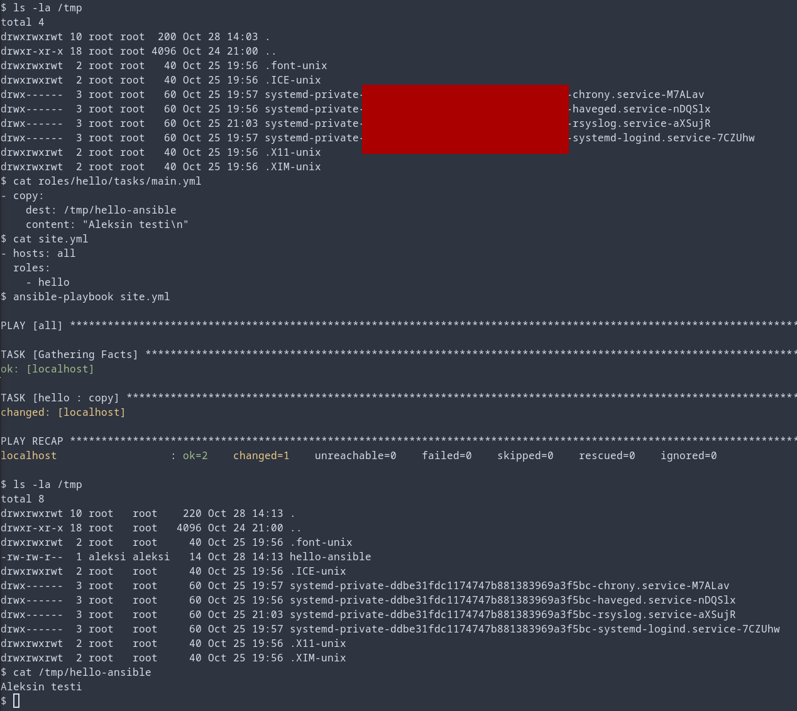

Host laitteisto
- Prosessori: AMD Ryzen 9 5900x 12-Core
- Keskusmuisti: 32GB DDR4
- Näytönohjain: NVIDIA GeForce RTX 3080
- OS: Linux 7.2.11-1-cachyos x86-64
Virtuaalikone
- 1 CPU
- 2GB RAM
- 20GB
- Debian 13
Harjoitus 1: Hei Ansiblen maailma (Karvinen 2026a)
x) Tiivistelmä
Karvinen 2026: SSH public key (Karvinen 2026b)
- SSH on johtava menetelmä turvallisesti palvelimille kirjautumisessa
- SSH julkisen avaimen avulla sinun ei tarvitse kirjoittaa salasanaa koko ajan
- SSH yhteys saadaan helposti komennolla ssh [käyttäjänimi]@[host osoite], esimerkiksi aleksi@localhost
- SSH avaimet generoidaan komennolla ssh-keygen
- Julkisen SSH avaimen voi kopioida komennolla ssh-copy-id [host osoite], esimerkiksi ssh-copy-id localhost
- Oma pohdinta: Mitkä ovat SSH heikkoudet?
Karvinen 2026: Hello Ansible (Karvinen 2026c)
- Infrastructure-as-code, IaaS
- Hallitsee montaa eri laitetta helposti
- Ansible tarvitsee SSHn sekä Pythonin client/slave koneella. Ansible tarvitaan vain host/master koneella
- Ansible asennetaan komennolla sudo apt-get install ansible
- Ansible kansio pitää tehdä käyttäjän juureen/koti kansioon, jonne tehdään ansible konfiguraatio tiedostot
- hosts.ini tiedostossa on hostit, joita ansiblella halutaan kontrolloida. Hostit voidaan ryhmitellä kategorioittain, esim web ja db
- Helppo testi komento on ansible all -a 'uptime' -i hosts.ini
- Python versio voidaan pakottaa tiettyyn versioon, jolloin Ansible lopettaa varoituksen siitä, komennolla [all:vars] ansible_python_interpreter=/usr/bin/python3 hosts.ini tiedoston alimpana
- Myös -i hosts.ini komento voidaan lopettaa, kun lisätään komento [defaults] \n inventory = hosts.ini tiedostoon ansible.cfg
- Komento display_args_to_stdout = true defaults kohdan alla tulostaa mitä ansible playbook tekee
- Tietokoneiden roolit määrätään tiedostossa site.yml
- Roolit määritellään roles/[roolin nimi]/tasks/main.yml tiedostossa. Voidaan esimerkiksi kopioida tiedosto lisäämällä main.yml tiedostoon - copy: \n dest: /tmp/hello-ansible \n content: "See you at TeroKarvinen.com!\n"
- Oma pohdinta: Ansiblen heikkoudet?
a) Paikallista (Karvinen 2026a)
Asennetaan Debian 13 paikalliselle koneelle virtuaalikoneeksi. Tein tämän jo h0 kohdassa edellisessä tehtävässä (Partanen 2026), josta sen voi käydä katsomassa. TLDR; Asensin Debian 13 Oraclen VirtualBoxiin.
b) Sshecrets (Karvinen 2026a) ja c) Pubkey (Karvinen 2026a)
Joudun käyttämään virtuaali palvelinta, koska jostain syystä virtuaalikone windows sekä linux (cachyos) koneilla ei halunnut toimia. Virtuaalikone jäätyy sisäänkirjautumisen aikana, eikä edes uuden virtuaalikoneen asennus auttanut. Todennäköisesti syynä on mahdollisesti kernel päivitys, jonka tein edellisenä päivänä. Pitää yrittää ensi kerraksi saada lokaali virtuaalikone toimimaan. Saan tehtävät kuitenkin tehtyä virtuaali palvelimella. EDIT 28.10.2026: Ongelma oli audio asetuksissa. Kun otin audion pois päältä virtuaalikoneesta (VM->Settings->Audio->Enable Audio), alkoi se toimia normaalisti. Edes Virtual Boxin täysi uudelleen asennus ei auttanut ongelmaan.
Mutta itse tehtävän pariin. Otan ensiksi yhteyden virtuaali palvelimelle SSH yhteydellä.

Sitten asennan SSH demonin virtuaali palvelimelle komennolla sudo apt-get -y install ssh. Olinkin tehny tämän jo aiemmin, joten tarkistin vielä että SSH demoni on käynnissä.

Jotta localhostiin kirjautuminen onnistuu SSH:lla, jouduin lisäämään virtuaali palvelimen julkisen avaimen authorized_keys tiedostoon. Tiedostossa näkyvät myös lokaalin virtuaalikoneen sekä host koneen julkiset avaimet.

Kirjaudun nyt SSH avulla localhostiin ja yhteys onnistuu. Varmistan vielä w komennolla, että molemmat istuntoni näkyvät.

d) Hei Ansible (Karvinen 2026a)
Tehdään hei maailma Ansiblen avulla. Edellisessä kohdassa jo kokeiltiin ssh yhteys localhostiin. Kokeilin sitä vielä uudestaan ja se toimi edelleen.

Asennetaan seuraavaksi ansible, vim, bash-completion sekä tree demonit. Olen itse jonkin verran käyttänyt vimiä, joten siksi se teksti editoriksi. Bash-completion nopeuttaa komentojen kirjoittamista, mutta jonkin takia en sitä vielä saanut toimimaan. Katsotaan jos sen saisi myöhemmin toimintaan. Tree näyttää kansio rakenteen paremmin kuin esim. pelkkä ls -la. Käytin asentamiseen komentoa sudo apt-get -y install ansible vim bash-completion tree.
Seuraavaksi tein ansible kansion, jonne tulen laittamaan ansibleen liittyvät tiedostot. Tein sinne tiedostot hosts.ini, ansible.cfg sekä site.yml. Lisäsin tiedostoon hosts.ini rivit localhost sekä [all:vars] rivin alle rivin ansible_python_interpreter=/usr/bin/python3, jonka avulla python varoitus saadaan pois. Kokeilin myös ansiblea jo tässä vaiheessa komennolla ansible all -a 'uptime' -i hosts.ini, ja sain oikeanlaisen tulostuksen. Tässä vaiheessa vasta hosts.ini tiedostossa on koodia.

Seuraavaksi lisään tarvittavat koodit ansible.cfg ja site.yml tiedostoihin. Teen myös ensimmäisen roolin. Ansible.cfg tiedostoon lisään rivit [defaults] ja inventory = hosts.ini. inventory = hosts.ini tarkoittaa, että ansible käyttää oletuksena hosts.ini tiedostoa inventorinaan, ja sitä ei tarvitse joka kerta kertoa komennossa. Nyt komento lyhenee muotoon ansible all - 'uptime'.

Seuraavaksi lisään roolin hello jokaiselle hostille. Se tapahtuu site.yml tiedostoon. Jotta rooli toimii, pitää myös tehdä roolille oma kansio sekä tasks/main.yml tiedosto. Roolit lisätään polkuun ansible/roles ja kansioon lisätään jokaiselle roolille oma kansio (Karvinen 2026c). Lisään hello roolin kansioon ja sille tasks/main.yml tiedoston. Tiedostoon lisään helpon komennon, jolla kopioidaan slave koneelle tiedosto tmp kansioon ja lisätään tiedostoon yksi rivi tekstiä. Testataan vielä aluksi komennolla ls -la /tmp ettei tmp kansiossa ole jo valmiiksi hello-ansible tiedostoa, jonka jälkeen ajetaan ansible playbook komento. Komennon ajun jälkeen huomataan, että PLAY RECAP osiossa on changed=1, joka kertoo, että yksi asia on muutettu slave koneella. Teen tarkistuksen komennoilla ls -la /tmp ja cat /tmp/hello-ansible, ja huomaan että testi on onnistunut.

Lähteet
- Karvinen, Tero 2026a. h1 Hei Ansiblen maailma. Luettavissa: https://terokarvinen.com/palvelinten-hallinta/#h1-hei-ansiblen-maailma. Luettu: 28.10.2026
- Karvinen, Tero 2026b. SSH public key - Login without password. Luettavissa: https://terokarvinen.com/ssh-public-key-login-without-password/. Luettu: 28.10.2026
- Karvinen, Tero 2026c. Hello Ansible. Luettavissa: https://terokarvinen.com/hello-ansible/. Luettu: 28.10.2026
- Partanen, Aleksi 2026. Harjoitus 0: Oikeasti netissä. a) Paikallista. Luettavissa: https://partanennn.github.io/server-management/practices/pre-task.html#paikallista. Luettu: 28.10.2026
Tehtävänanto
- x) Lue ja tiivistä. (Tässä x-alakohdassa ei tarvitse tehdä testejä tietokoneella, vain lukeminen tai kuunteleminen ja tiivistelmä riittää. Tiivistämiseen riittää muutama ranskalainen viiva. Ei siis vaadita pitkää eikä essee-muotoista tiivistelmää. Lisää kuhunkin jokin oma kysymys tai huomio. Paljon komentoja sisältävistä dokumenteista kannattaa nostaa mukaan keskeiset komennot ja selittää ne.)
- Paikallista. Asenna Debian 13 paikallisesti virtuaalikoneeseen. Voit käyttää esimerkiksi VirtualBoxia. (Tätä käytetään myös tuntiharjoituksiin. Jos raportoit tämän jo h0 yhteydessä, pelkkä linkki raporttiin riittää. Suppea raportointi tässä alakohdassa: mikäli ongelmia ei tullut, pelkkä luettelo tehdyistä valinnoista riittää. Jos ongelmia, yksityiskohtainen, toistettava raportti.)
- b) Sshecrets. Asenna SSH-demoni käsin ja testaa se kirjautumalla SSH:lla. (localhost kelpaa)
- c) Pubkey. Automatisoi ssh-kirjautuminen julkisella avaimella. (localhost kelpaa)
- d) Hei Ansible. Tee hei maailma ansiblella ja kokeile sitä SSH:n yli. (localhost kelpaa)
- e) Vapaaehtoinen bonus: kokeile Ansiblella jokin näista asetuksista: paketin asennus, asetustiedosto /etc/ alle, käynnistä jokin demoni, tee uusi käyttäjä. Tarvitset todennäköisesti sudoa, become: true.